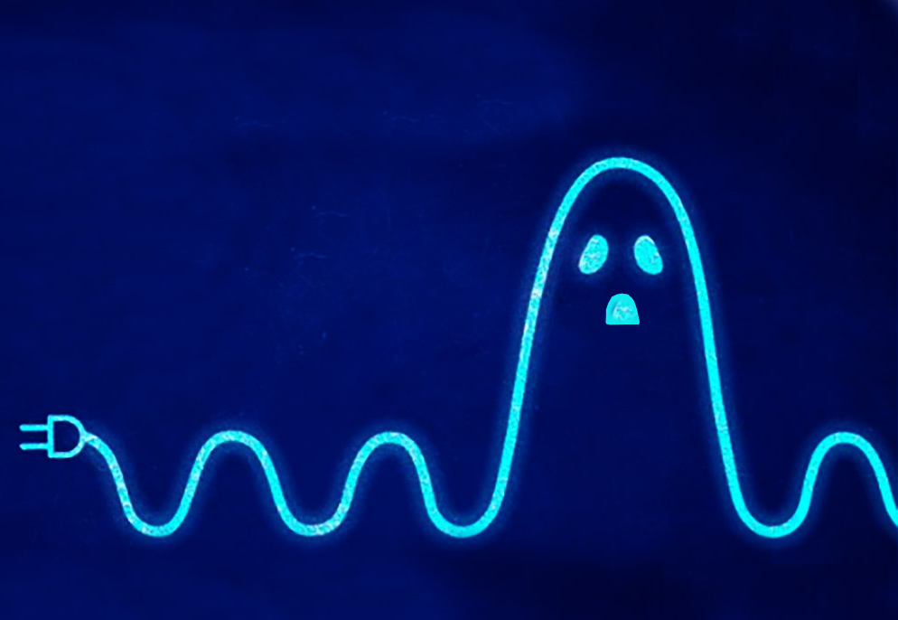
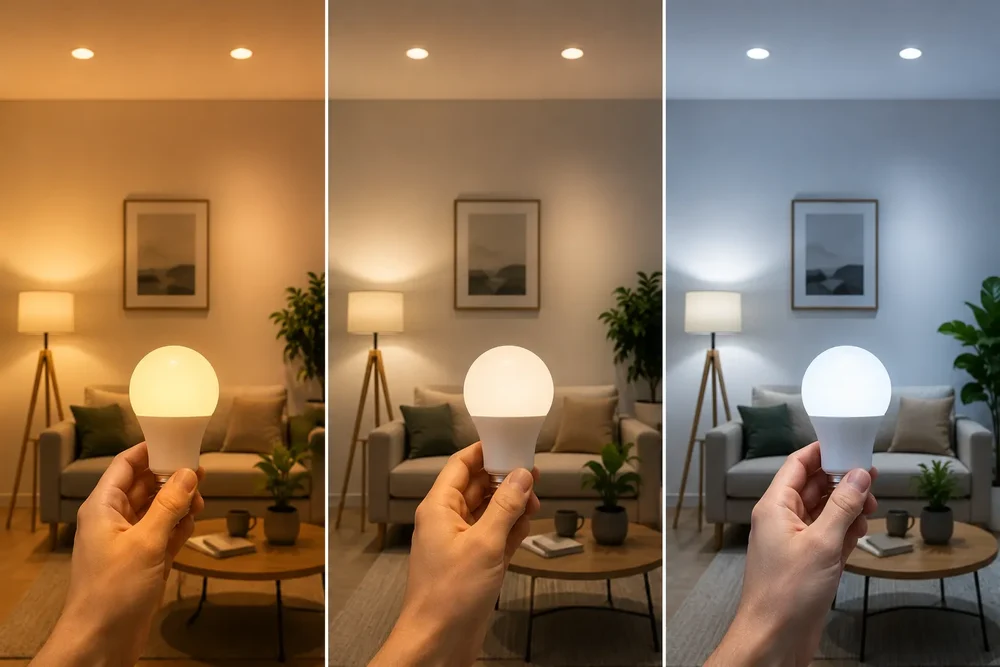

La Revolución del Ahorro Energético Inteligente:
Cómo Reducir el Consumo sin Perder Confort
1. El enemigo silencioso: El consumo fantasma (Standby)
Uno de los mayores mitos del gasto eléctrico es creer que los aparatos que están apagados o en modo de espera no consumen energía. A este fenómeno se le conoce como consumo fantasma o carga en standby, y puede representar hasta un 10% de la factura eléctrica mensual en un hogar promedio.

- ¿Cómo ocurre? Televisores, microondas con pantallas LED, consolas de videojuegos, cargadores enchufados sin dispositivos y ordenadores en modo suspensión continúan demandando energía de la red para mantener circuitos listos de manera instantánea.
- La solución técnica: Implementar regletas inteligentes con interruptores de corte total o automatizar el apagado nocturno de estos equipos reduce este desperdicio invisible de forma inmediata, sin afectar la vida útil de los aparatos.
2. La iluminación: El paso más accesible hacia la eficiencia
La transición de la iluminación incandescente y halógena hacia la tecnología LED (Diodo Emisor de Luz) representa uno de los hitos más importantes en la historia del ahorro energético.
- ¿Cómo ocurre? Televisores, microondas con pantallas LED, consolas de videojuegos, cargadores enchufados sin dispositivos y ordenadores en modo suspensión continúan demandando energía de la red para mantener circuitos listos de manera instantánea.
- La solución técnica: Implementar regletas inteligentes con interruptores de corte total o automatizar el apagado nocturno de estos equipos reduce este desperdicio invisible de forma inmediata, sin afectar la vida útil de los aparatos.

3. Electrodomésticos y climatización: Dónde se va el verdadero presupuesto
Si analizamos la estructura de consumo de un edificio o vivienda, los sistemas de climatización (calefacción y aire acondicionado) y los electrodomésticos de línea blanca (frigoríficos, lavadoras, secadoras) acaparan más del 50% del consumo total.

- El impacto de la etiqueta energética: Al renovar o seleccionar equipos, prestar atención a las certificaciones de eficiencia de alta gama marca una diferencia abismal. Un refrigerador antiguo que opera las 24 horas del día puede consumir el triple de energía que un modelo inverter moderno.
- Gestión inteligente de la temperatura: Mantener los aires acondicionados en rangos óptimos (por ejemplo, 24°C en verano) y realizar mantenimientos periódicos en los filtros evita que los motores trabajen bajo sobrecarga y consuman corriente de más.
4. El siguiente nivel: El autoconsumo y la energía solar
Cuando se han optimizado los hábitos de consumo y se cuenta con equipos eficientes, el siguiente paso lógico en la tecnología de sostenibilidad es cambiar la forma en que obtenemos esa electricidad.
La integración de paneles solares fotovoltaicos permite a los hogares y a las empresas generar su propia energía limpia a partir de la radiación solar. Al complementar el suministro de la red eléctrica tradicional con autogeneración:
- Se reduce drásticamente la dependencia de las fluctuaciones en las tarifas de las compañías eléctricas.
- Se amortiza la inversión inicial a mediano plazo gracias al ahorro acumulado en los recibos.
- Se disminuye de manera directa la huella de carbono corporativa y personal, contribuyendo de forma activa a los objetivos globales de mitigación del cambio climático.

5. Conclusión: Cada kilovatio cuenta
El ahorro energético no es una moda pasajera ni una tarea exclusiva de las grandes industrias; es un compromiso cívico y económico que empieza en las decisiones cotidianas del hogar y en la planificación operativa de las empresas. Adoptar una mentalidad de eficiencia energética nos permite utilizar mejor los recursos disponibles, proteger nuestra economía y construir un entorno donde la innovación tecnológica y el cuidado del planeta vayan de la mano.